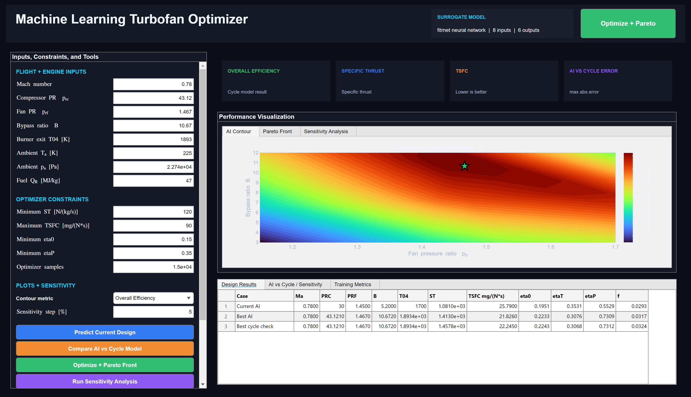

What the project actually does
This project is not just a machine-learning demo and it is not just a thermodynamics homework tool. It is a full engineering workflow that uses first-principles turbofan cycle analysis to create a reliable training set, then uses regression models to replace repeated expensive cycle evaluations during design-space exploration.
The physics layer is a non-afterburning turbofan model built around diffuser, fan, compressor, burner, turbine, and nozzle station relationships. The AI layer learns the mapping from eight design and flight-condition inputs to six propulsion outputs. The app layer then lets a user compare AI predictions against the original cycle model, search for feasible designs, trace Pareto tradeoffs, and rank variable sensitivity without leaving the GUI.
Cycle-model inputs
Mach number, compressor pressure ratio, fan pressure ratio, bypass ratio, burner exit temperature, ambient temperature, ambient pressure, and fuel heating value.
Sampling strategy
Latin hypercube sampling is used when available to space points across the design space more intelligently than pure random sampling.
Deployment target
The final deliverable is a decision-support dashboard, not a raw script, so the project emphasizes usable engineering interaction as well as model accuracy.
Baseline turbofan model and dataset generation
The baseline solver computes specific thrust, thrust-specific fuel consumption, overall efficiency, thermal efficiency, propulsive efficiency, and fuel-air ratio from a turbofan cycle formulation using fixed component efficiencies and specific-heat ratios. The dataset generator sweeps the design space over realistic cruise and design-study ranges rather than arbitrary extremes to avoid filling the training set with obviously invalid engines.
- The generator samples eight inputs over bounded ranges: Ma = 0.65-0.88, PRC = 15-45, PRF = 1.15-1.70, B = 3-12, T04 = 1400-1900 K, Ta = 210-290 K, pa = 18,000-101,325 Pa, and QR = 43-47 MJ/kg.
- The turbofan cycle code computes stagnation states through the diffuser, fan, compressor, burner, turbine, core nozzle, and fan nozzle, then assembles ST, TSFC, etaP, etaT, eta0, and f from the resulting jet states.
- A validity filter rejects complex-valued, nonfinite, nonpositive, or obviously nonphysical outputs, which reduced the final usable dataset to 5,564 samples out of the original 8,000 generated cases.
- The retained dataset spans ST from 137.19 to 1782.17 N/(kg/s), TSFC from 20.62 to 95.19 mg/(N*s), and eta0 from 0.0553 to 0.2301, giving the surrogate a broad but still realistic training envelope.
Training six surrogates instead of one black-box score
The training script shuffles the valid data and splits it 70% for training, 15% for validation, and 15% for test evaluation. Each output is modeled separately, which keeps error accounting clear and makes it easier to see which performance quantities are easier or harder to learn from the same design variables.
Primary model path
When the Statistics and Machine Learning Toolbox is available, the project uses MATLAB's
fitrnet with two hidden layers sized [32, 16], ReLU activations, feature
standardization, L2 regularization with lambda = 1e-4, and an iteration limit of 1000.
Fallback model path
If fitrnet is unavailable, the code falls back to an LSBoost ensemble with 250
learning cycles, a minimum leaf size of 8, and a learning rate of 0.05. The app also includes
compatibility logic for an older toolbox-free polynomial ridge surrogate format.
Test-set metrics show that the surrogate is strongest on etaT (R2 = 0.9943, RMSE = 0.00409), etaP (R2 = 0.9877, RMSE = 0.01395), and fuel-air ratio (R2 = 0.9757, RMSE = 0.00085). It still performs well on thrust and TSFC, with R2 values of 0.9416 and 0.9346 respectively. Overall efficiency is the hardest learned output, with R2 = 0.8707, which makes sense because eta0 compounds multiple other effects.
Interactive optimization, validation, and sensitivity analysis
The finished app loads the trained model and turns it into a working propulsion design tool. Users can enter a current flight condition and engine design, request an AI prediction, compare that prediction directly against the original cycle code, and then move into constrained search.
- The app's constrained optimizer samples 15,000 candidate designs by varying PRC, PRF, bypass ratio, and T04 inside the allowed bounds while keeping the remaining flight-condition inputs fixed.
- Feasible candidates are screened using minimum specific thrust, maximum TSFC, minimum overall efficiency, and minimum propulsive efficiency constraints.
- The scalar selection objective is eta0 - 1e-4 * TSFC, which favors efficient designs while still penalizing fuel burn.
- The Pareto view plots eta0 against TSFC and colors feasible points by specific thrust, which makes the efficiency-fuel-thrust trade space readable instead of hidden inside a single score.
- A one-at-a-time sensitivity tool perturbs each input around the selected baseline and normalizes the resulting effect on a chosen metric, giving a fast local ranking of the dominant variables.
App interface and technical outputs
These screenshots come directly from the project folder and show the parts of the tool that matter most to an engineering reviewer: the dashboard itself, the design-result comparison table, and the sensitivity-analysis output that helps interpret what the optimizer is doing.



Why this project matters
The main value of the project is that it connects three normally separate skill sets: propulsion cycle analysis, regression-model validation, and engineering tool design. Instead of asking recruiters to infer those skills from disconnected files, this project shows a complete pipeline from physics model to ML surrogate to decision-support interface.
It also demonstrates good engineering discipline around ML use: the surrogate is not treated as ground truth, the underlying cycle model remains in the loop for comparison, infeasible outputs are filtered early, and design-space search is framed in terms of interpretable propulsion metrics rather than a vague black-box score.